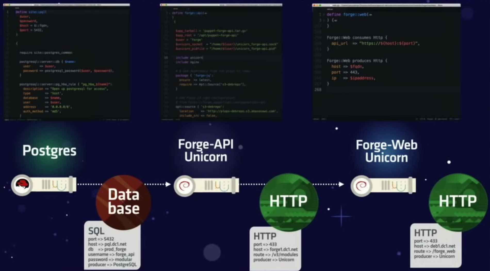
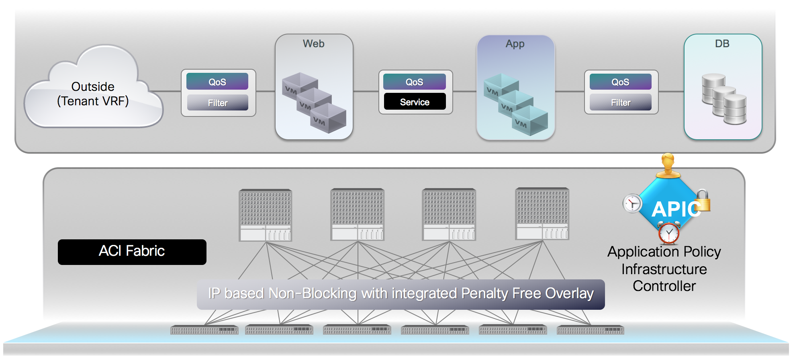

Agenda
- Introduction
- Network device automation
- Policy based automation
Open NX-OS
- Bootstrap and provisioning - PoAP / ONIE / PXE
- Package management - RPM / YUM
- Standard Linux interfaces - Bash / iproute2 / ...
- Adaptable and extensible - Containers / 3rd-party software
- Automatable - NX-API / Python
- Automation tools - Puppet / OpenStack / ...
Puppet
- Native agent - install by RPM from PuppetLabs
- Runs mcollective
- Run as a service with init scripts
ciscopuppet module
| cisco_vtp | cisco_ospf_vrf |
| cisco_tacacs_server | cisco_vlan |
| cisco_tacacs_server_host | cisco_bgp |
| cisco_snmp_server | cisco_bgp_vrf |
| cisco_snmp_community | cisco_interface |
| cisco_snmp_group | cisco_interface_ospf |
| cisco_ospf | cisco_interface_vlan |
netdev_stdlib
| domain_name | name_server |
| network_dns | network_snmp |
| ntp_config | ntp_server |
| radius | radius_global |
| radius_server | syslog_server |
| syslog_setting |
cisco_command_config
class network_devices::vni ($vlan, $vnsegment) {
cisco_command_config { "vni-$vnsegment-$vlan":
command => "
vlan $vlan
vn-segment $vnsegment
"
}
}
Who cares about
... VLANs?
... SVIs?
... VRFs?
Abstraction - Puppet application orchestration

Abstraction - Docker compose
Group based policy - ACI

Summary
- Device level automation
- Policy based automation
- Group based policy